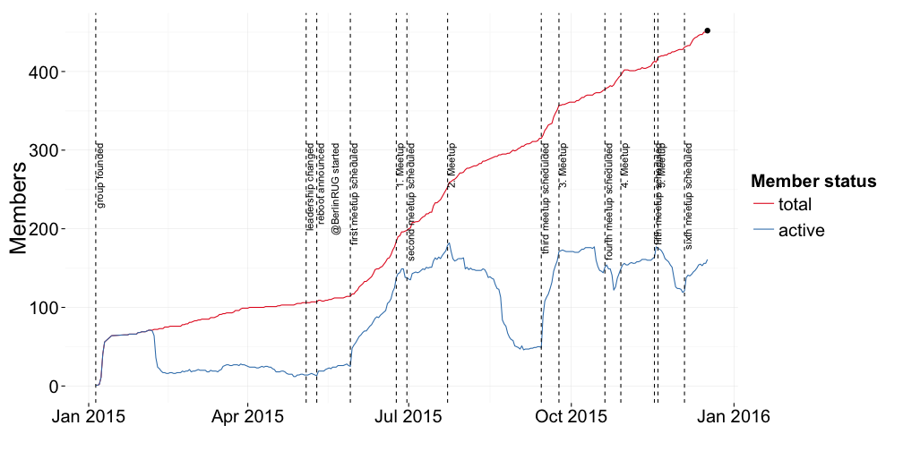

6. Meetup of Berlin R Users Group - "Method Comparison Studies (MCS)"
2015-12-17 @ Hypoport (Berlin, DE)
Konstantin Greger
Schedule for today
| Time | What's happening |
|---|---|
| 18:30 | doors open |
| 19:15 | Konstantin Greger (@kogreger): "Welcome and Brief Introduction" |
| 19:20 | Jens Hanack (@hypoport): "Welcome to Hypoport" |
| 19:25 | Open Mic! |
| 19:30 | Kevin O'Brien (University of Limerick; @kobriendublin): "Method Comparison Studies with R: A whistlestop tour of methods and techniques for one of the most commonly encountered problems in sciences" |
| from ~20:45 | socializing & networking |
| 22:00 | doors close |
Number of group members

Call for Presenters
time series analysis, own packages, modelling count variables, binary logistic modelling with R, data manipulation with dplyr (with magrittr), data visualization with ggvis, making maps with R, introduction to survival analysis with R, logistic regression modelling with R - beyond binary (multinomial and ordinal logistic regression), shiny dashboard, propensity score matching studies, dplyr, ggvis, possibly some of the work I've done with web scraping, network analysis, information visualization, maps and spatial analysis in R, R in the social sciences, basic introduction to dplyr, data mining in R, ODE based models of phytoplankton growth, overview of glmnet, applications of using R in my job environment, R introductionary course, writing functions in R is actually fairly easy, R + knitr + LaTeX: much stronger than Office Word (claim and proof), *apply is the best thing since sliced bread, why you should write a package - and how, modelling election outcomes, discrete choice modeling, bayesian statistics, quantitative marketing/economics, reproducibility in environmental modelling
Just contact me: kogreger@gmail.com
Important Links
Participate in our group survey here: http://bit.ly/BerlinRUG_Member_Survey
Have a look at our group repository here: http://kogreger.github.io/BerlinRUG
Get the latest news via Twitter: @BerlinRUG
User Group hashtag: #BerlinRUG
Our group sponsors
Open Mic!
"SennMicrophone" by ChrisEngelsma - Own work. Licensed under CC BY-SA 3.0 via Commons
https://commons.wikimedia.org/wiki/File:SennMicrophone.jpg#/media/File:SennMicrophone.jpg
https://commons.wikimedia.org/wiki/File:SennMicrophone.jpg#/media/File:SennMicrophone.jpg
Schedule for today
| Time | What's happening |
|---|---|
| 18:30 | doors open |
| 19:15 | Konstantin Greger (@kogreger): "Welcome and Brief Introduction" |
| 19:20 | Jens Hanack (@hypoport): "Welcome to Hypoport" |
| 19:25 | Open Mic! |
| 19:30 | Kevin O'Brien (University of Limerick; @kobriendublin): "Method Comparison Studies with R: A whistlestop tour of methods and techniques for one of the most commonly encountered problems in sciences" |
| from ~20:45 | socializing & networking |
| 22:00 | doors close |
A neRdy gReeting
set.seed(31612310)
paste(sample(letters,5,T), collapse='')
set.seed(12353); sample(0:9,4,T)
A neRdy gReeting
set.seed(31612310)
paste(sample(letters,5,T), collapse='')
## [1] "happy"
set.seed(12353); sample(0:9,4,T)
## [1] 2 0 1 6
Thanks, Berry!